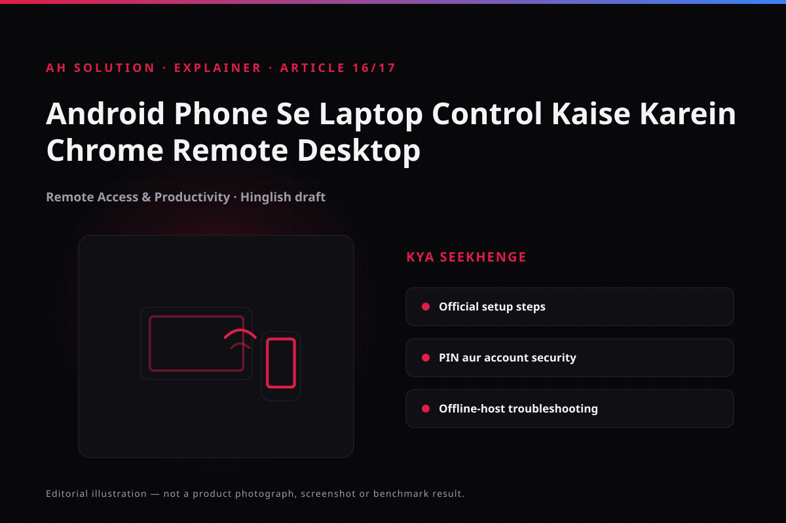

Have you ever left the office and left an important file on your laptop? Or wanted a document edited without getting up to the machine? With Chrome Remote Desktop, you can access and control your laptop remotely from an Android phone. The video "How to Control Your Laptop from Android Phone! 📱💻 | Chrome Remote Desktop" demonstrated that concept.
This guide explains the same concept with updated context. Even though the video dates from 2020, the core workflow of Chrome Remote Desktop is still recognisable, although the interface has changed somewhat. The steps below therefore describe the general, verifiable approach rather than exact button names.
Original video: How to Control Your Laptop from Android Phone! 📱💻 | Chrome Remote Desktop Video published: 12 July 2020 · Duration: 02:20
What Chrome Remote Desktop is
Chrome Remote Desktop is Google's official remote access tool, which lets you access your own computer securely from another device. It allows you to control a Windows, macOS or Linux PC from an Android phone — opening files, using applications and completing basic tasks while you are away from the machine. It is designed for your own devices, and although it can also be used for remote support, that should only happen with people you trust.

Prerequisites
Before you set up remote access, have these ready:
- Laptop or PC: Windows 10/11 (the common case), macOS or Linux — setup is done on whichever machine acts as the host.
- Android phone: with the Chrome Remote Desktop app installed from the official Google Play Store.
- Google account: the same account, or an authorised one, is used to sign in on both ends.
- Internet connection: a stable connection is needed on both devices, over Wi-Fi or mobile data.
- Host PC power settings: the PC must not sleep or hibernate, otherwise no connection will be possible.
Step-by-step setup
1) Set up Chrome Remote Desktop on the host PC
- Open a browser on the PC and go to remotedesktop.google.com, the official Google page.
- Open the "Remote Access" section and follow "Set up remote access".
- When prompted, download and install the official Chrome Remote Desktop host installer. This turns the PC into a host.
- Once the installation is complete, give the PC a name and set a strong PIN (six digits, as per the current interface). The PIN is used for local authentication.
- Confirm the sign-in with your Google account and complete the setup.
Note: the exact interface depends on the version. Buttons may be renamed, but the flow stays the same.
2) Connect from your Android phone
- Install the official "Chrome Remote Desktop" app on your Android phone from the Play Store.
- Open the app and sign in with the Google account you used to configure the host PC.
- In the list of available computers, find your PC.
- Select the PC, enter the PIN and connect.
- You can now see and control your laptop screen from the phone.
On-screen controls and the experience
When controlling from the phone, you get trackpad-like controls: tap, swipe, scroll and pinch to zoom where it is supported. A keyboard also pops up on demand. The experience depends on the speed of the connection — it feels smooth on fast Wi-Fi, and lag becomes noticeable on a slow network. Certain actions, such as gaming or heavy video editing, will not feel smooth, while ordinary tasks like browsing, documents and email generally work fine.
Security essentials
Remote access is powerful, so treat its security settings carefully:
- Strong, unique PIN: avoid easy PINs. Use a complex PIN that cannot be guessed.
- 2FA on the Google account: keep 2-step verification enabled as an extra layer.
- Only your own or trusted devices: use it only on devices you have authorised.
- Sign out on a lost device: if you lose your phone, review your active sessions through Google account security.
- Never share your PIN: under no circumstances share it with another person.
- Disconnect after use: always disconnect once a session has finished.
Troubleshooting common issues
These are the issues that come up most often, with the likely cause and a first attempt at a fix:
| Issue | Possible reason | Try this |
|---|---|---|
| PC does not appear in the list | Host is offline or asleep | Wake the PC, keep it awake and check the internet connection |
| Connection fails | Network or firewall | Try a stable connection, and disable a VPN if it interferes |
| PIN rejected | Wrong PIN or version | Enter the correct PIN; sometimes the host needs to authenticate again |
| Laggy or jerky | Slow internet | Use better Wi-Fi and close bandwidth-heavy applications |
| Cannot connect from outside home? | Router or firewall | The host has to be configured on the home network; some networks are restrictive |
Note: work or school networks and managed devices may block connections through administrative policy.
Troubleshooting and limitations
Understanding the honest limitations is important:
- Internet dependent: offline access is not possible. Both ends have to be online.
- Performance: gaming and 4K video playback will not be smooth on a slow connection.
- Audio: audio forwarding is sometimes limited depending on platform or version — expect basic control, and treat audio as variable.
- Wake-on-LAN is not guaranteed: not every PC can be woken remotely.
- Battery drain: controlling the PC from your phone can use a noticeable amount of battery.
- Version drift: the interface and labels can change, so verify the latest information on the official remotedesktop.google.com.
Safety and privacy
Chrome Remote Desktop is considered end-to-end encrypted, but most of the security depends on how it is set up. Keep your Google account secure, choose a strong PIN and limit who can access a session. Never share a remote access code or a support session with someone unknown, unless it is absolutely necessary and the person is fully trusted.
Frequently asked questions
Is Chrome Remote Desktop free?
Yes. Google makes Chrome Remote Desktop available for free use.
Is only the Chrome browser needed?
Host setup starts in the browser, but a host component then has to be installed. The Android app is a separate application.
Can the PC be connected to while it is in sleep mode?
Generally not. The PC needs to be awake and online, because sleep or hibernation blocks the connection.
Can I control my PC from outside, over a different network?
Yes. If the host PC is configured and online, you can connect from a different network as long as the phone has internet access.
Will I hear audio as well?
Sometimes it is limited. Audio support has varied from the 2020 context until now. Expect the focus to be on control, and do not assume audio will always work.
Is it safe for personal use?
With a strong PIN, 2FA and a secure account, it is considered reasonably safe for personal use. Follow the practices above and you will reduce the risk considerably.
Final recommendations
Chrome Remote Desktop is a practical and reliable way to control your laptop from an Android phone, especially for documents, email and quick tasks. The setup is simple, but security should not be treated casually. Use a strong PIN, enable 2FA, disconnect when a session ends, and verify version-specific changes against the official documentation. For heavier work, local access remains the better option, and our other guides on tutorials.html cover related workflows.
Resources and official links
- Chrome Remote Desktop official portal — Google's official page for setup and access.
- Google Support — Access another computer with Chrome Remote Desktop — official setup steps, PINs and troubleshooting.
- Google Support — Turn on 2-Step Verification — the official guide to Google account security.